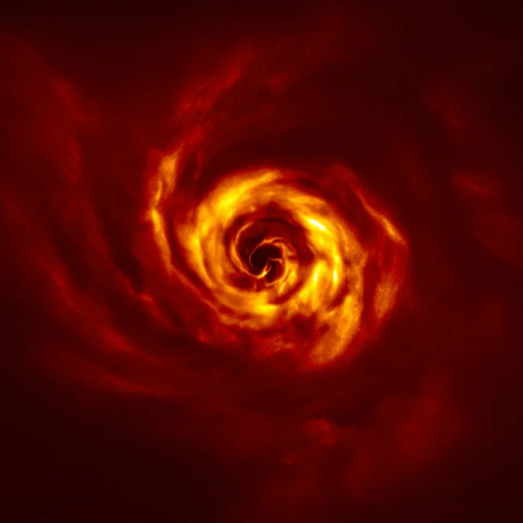

4. April 2022
Beobachtung eines Protoplaneten gibt Aufschlüsse über Mechanismen der Planetenentstehung
Durch direkte Beobachtung mit dem Subaru-Teleskop und dem Hubble-Weltraumteleskop haben Forscher in der protoplanetaren Scheibe des Sternensystems AB Aurigae den bislang jüngsten Exoplaneten entdeckt. Der noch im Entstehen befindliche Protoplanet umkreist seinen Zentralstern im Abstand von 93 AU und könnte zu einem Gasriesen mit neunfacher Jupitermasse heranwachsen.
Die große Entfernung vom Zentralgestirn könnte darauf hindeuten, dass die Planetenentstehung hier nach dem Gravitations-Instabilitäten-Modell erfolgt. Bei diesem Modell wird die planetare Scheibe im Außenbereich zunächst instabil, was sich in der Bildung von Spiralarmen äußert. Anschließend kollabieren Teile der Scheibe durch ihre eigene Schwerkraft und bilden dabei direkt Gasriesen.
Quellen: Franziska Konitzer: "Protoplanet beim Entstehen erwischt." Online; Spektrum.de; abgerufen am 08.04.2022; Currie, T., Lawson, K., Schneider, G. et al.: "Images of embedded Jovian planet formation at a wide separation around AB Aurigae."; Nature Astronomy (2022); https://doi.org/10.1038/s41550-022-01634-x